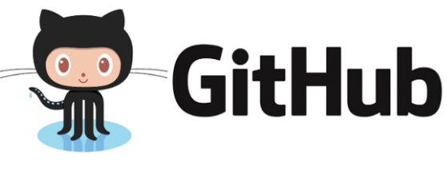

Resumen del modulo 2: habilidades del Frontend con HTML Y CSS
El desarrollo frontend es la práctica de convertir datos en una interfaz gráfica, a través del uso de HTML, CSS y JavaScript, para que los usuarios puedan interactuar con ella. HTML (Lenguaje de Marcas de Hipertexto) se utiliza para estructurar el contenido en la web, mientras que CSS (Hojas de Estilo en Cascada) se usa para controlar el diseño y el estilo de la página web. Los desarrolladores frontend toman el diseño del sitio web y construyen una versión funcional de él en el navegador
TERMINAL DE COMANDOS
Que es la terminal de comandos
La terminal de Linux, también conocida como línea de comandos o consola, es una interfaz de texto que permite al usuario interactuar directamente con el sistema operativo, en lugar de usar un ratón para hacer clic en botones y menús, en la terminal se introducen comandos de texto para realizar tareas.

La terminal se utiliza para una variedad de tareas, como administrar archivos y directorios, instalar y desinstalar programas, y configurar el sistema operativo, también es una herramienta poderosa para programar y resolver problemas en el sistema.
Aquí tienes algunos comandos básicos que puedes usar en la terminal de Linux:
Comando "CD"
cd: Cambia el directorio actual. Por ejemplo, cd Documentos te moverá al directorio Documentos

Comando "LS"
ls: Lista los archivos y directorios en el directorio actual

Comando "PWD"
pwd: Muestra el camino del directorio actual

Comando "CP"
cp: Copia archivos y directorios. Por ejemplo, cp index.html index2 copiará el contenido de index.html a index2

Comando "RM"
rm: Elimina archivos y directorios. Por ejemplo, rm index2 eliminará el archivo llamado index2
“Este es el inicio de tu carrera como Desarrollador Web”
Danielys Beltrán
GIT Y GITHUB
Qué es GIT
Git es un sistema de control de versiones. Esto significa que Git te ayuda a gestionar tus archivos de proyecto y mantiene un registro de todo el historial de las cosas en las que estás trabajando. Esto es especialmente útil para los desarrolladores, ya que cuando se trabaja en un proyecto, lo que primero se construye es una versión básica del mismo y luego se trata de mejorar añadiendo nuevas características o simplemente experimentando con lo ya escrito. El control de versiones entra en juego aquí, puesto que realiza un seguimiento automático de cada minuto de cambios en tu proyecto y te permite volver a una versión anterior sin importar cuántas veces hayan cambiado tus archivos

<!DOCTYPE html>
<html lang="en">
<head>
<meta charset="UTF-8">
<meta http-equiv="X-UA-Compatible" content="IE=edge">
<meta name="viewport" content="width=device-width, initial-scale=1.0">
<title>Document</title>
</head>
<body>
</body>
</html>
-->
Qué es GITHUB
GitHub es una plataforma basada en la nube construida alrededor de Git. La diferencia principal entre Git y GitHub es que Git es una herramienta open source que los desarrolladores instalan localmente para gestionar el código fuente, mientras que GitHub es un servicio en línea al que los desarrolladores que utilizan Git pueden conectarse y cargar o descargar recursos.

Como instalar GIT
Abre tu terminal de Linux y escribe los siguientes comandos para instalar git en la computadora

Configuración de GIT
Despues de instalar git en la computadora, se debe de configurar con tu nombre de usuario y correo electrónico para asociar tus cambios con tu identidad con los siguientes comandos:

Configuración de GIT
La semántica le brinda sentido a cada elemento existen en un sitio web, algunos elementos será meramente decorativos y no deben significar nada pero otros serán títulos y deberán estar en diferente jerarquías o alguna secciones serán más relevantes que otras, esto ayudará a los motores de búsqueda como Google o Duck Duck Go a diferenciar tu contenido, categorizar y será la herramientas más valiosa para estar en los primeros resultados de búsqueda SEO. También ayudará a la accesibilidad de tu sitio web, para que personas con habilidades diferentes puedan entender cada contenido.
Atributos
Los atributos le dan características extra a las etiquetas para complementar información y son pre programadas por el navegador, algunos atributos funcionan en todas las etiquetas de la misma forma como ‘class’ pero otros atributos funcionan en solo alguna etiquetas como src
CSS
Hojas de Estilo en Cascada (del inglés Cascading Style Sheets) o CSS es el lenguaje de estilos utilizado para describir la presentación de documentos HTML

Modelo de caja
El modelo de caja está compuesto por:
Chrome va a ser el navegador que utilizaremos en el curso por su extenso soporte de nuevos estándares y herramientas de desarrollo avanzadas y de amigable uso.
- Tamaño del del contenido / ancho y alto
- Padding / Relleno
- Border / Bordes
- Margin / Márgenes
Propiedades físicas para el modelo de caja:
- width / height
- margin / margin-top | margin-right | margin-bottom | margin-left
- border / border-top | border-right | border-bottom | border-left
- padding / padding-top | padding-right | padding-bottom | padding-left
Propiedades lógicas para el modelo de caja:
- inline-size / block-size
- margin-block | margin-inline | margin-block-start | margin-block-end | margin-inline-start | margin-inline-end
- border-block | border-inline | border-block-start | border-block-end | border-inline-start | border-inline-end
- padding-block | padding-inline | padding-block-start | padding-block-end | padding-inline-start | padding-inline-end
¡Espero te sirva y te vuelvas un gran Frontend Developer!
Si tienes alguna pregunta escríbeme a
danielys@gmail.com